Intro to Generative AI & Data Analysis
With the increase in popularity of generative AI chatbots, people have begun to use them to assist with programming and data analysis. Let's look at a few ways you can implement generative AI into your programming and data analysis worflows.
A new data analyst assistant: ChatGPT 3
This tutorial will be using ChatGPT 3, but the concepts will be applicable to other generative AI (GenAI) models. With ChatGPT 3 , you cannot upload files (text, excel, etc.) or run code directly in the browser, so it has more limited capabilities for data analysis. However, there are still ways you can use ChatGPT 3 to assist in your data analysis such as:
Tutorial: Debugging an R Script
Scenario: You are a researcher new to R programming. You are trying to calculate some simple summary statistics, but are recieving an error message. Since you're not familar with R, you'd like help debugging your code. You decide to ask ChatGPT to help fix your code, so you can calculate the mean salary for different workplaces.
Providing context about who you are and what you're trying to accomplish can help achieve better results from a LLM. You can also define a role for the LLM to model its responses after as well. If you're new to using GenAI or are not familar with how context relates to GenAI, you can review these concepts on here. I will start by providing context about who I am and what I am trying to accomplish. I will also specify that I prefer concise language.
Specifying context
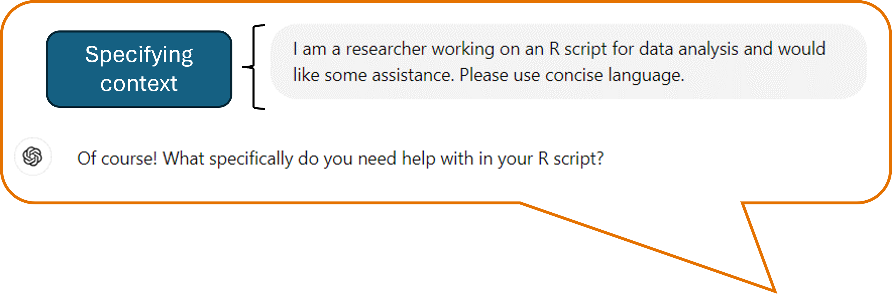Next I will provide additional details on the task I want ChatGPT 3 to perform. Providing additonal details in your initial prompt can help improve results, but you can also provide additonal guidance in future prompts to help refine results as well.
For this example, I will provide my R code and the error message I recieved to ChatGPT 3. When copying multiple pieces of information in can be helpful to separate the different parts of the prompt with new lines or quotations.
Instructions
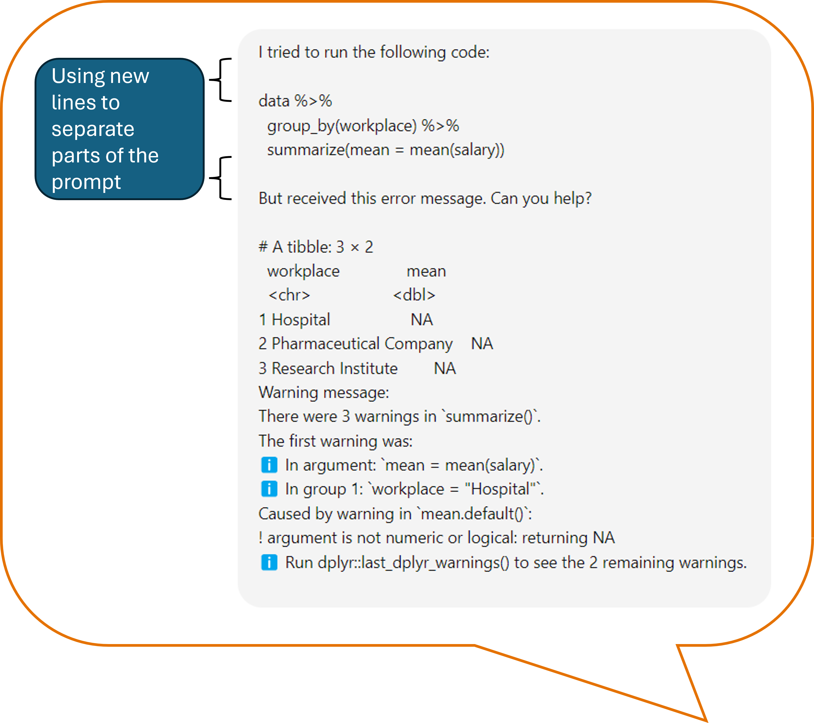ChatGPT 3 Response
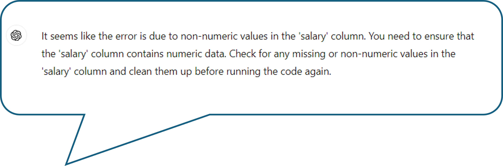ChatGPT 3 suggests that there may be non-numeric values in the ‘salary’ column. We were expecting salary to only contain numeric data, so why would R be treating it like non-numeric data? If there are non-numeric values, how do we correct this? Remember you should treat this like a conversation, so let’s follow up with additional questions.
Follow-up Question
ChatGPT 3 Response
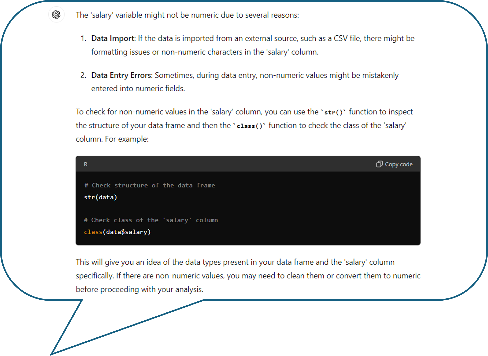ChatGPT 3 provides some information on why there might be non-numeric data and how we can check for it. When I run the code it suggested, I can see that there are several values that say "Not Reported". I want to be sure there aren’t more unexpected values in my dataset, so I ask ChatGPT 3how to search specifically for non-numeric entries.
Follow-up Question
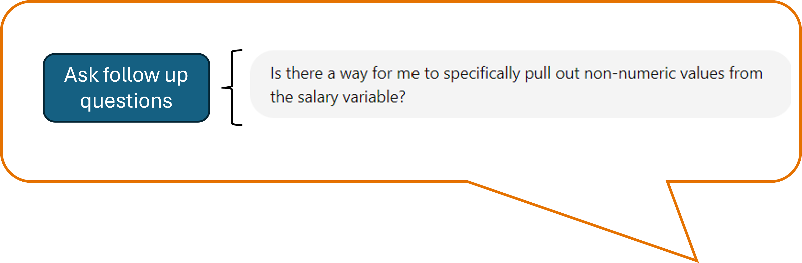ChatGTP 3 Response

Now ChatGPT 3 provides code that uses regular expressions to search for any non-numeric values in the salary column. In fact, ChatGPT and LLMs in general are known for being particularly helpful with regular expressions or manipulating text. If you’re not familiar with regular expressions, you can always ask ChatGPT for additional details.
Follow-up Question
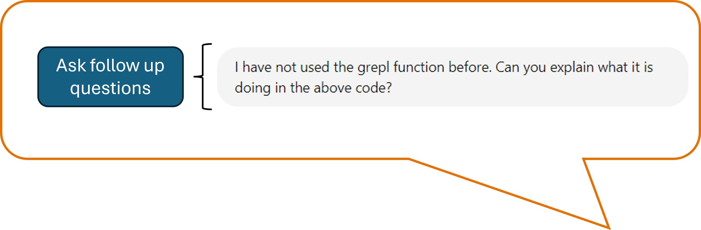ChatGTP 3 Response
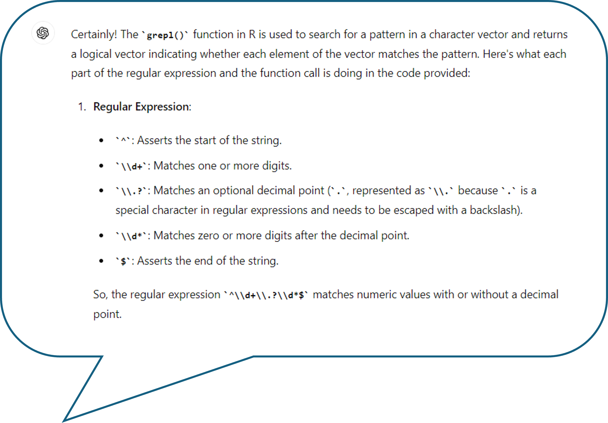ChatGPT 3 has provided a nice explanation of what the grepl function does, the regular expression pattern that it used, and how that was implemented in our specific code.
If you were satisfied with the explanation and wanted to make sure you remembered how this code worked in the future, you could ask ChatGPT 3 for help with writing additional comments.
Ask for documentation
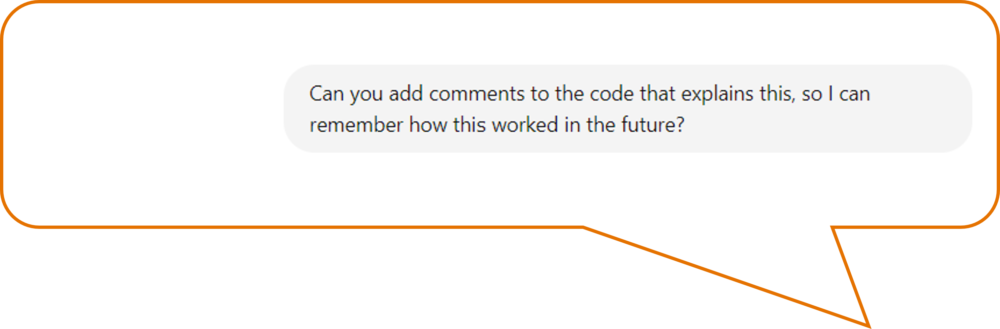ChatGTP 3 Response
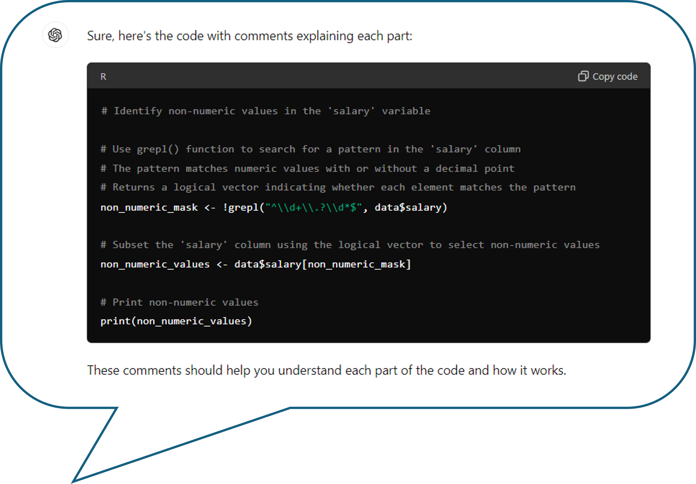In this example, we were asking for clarity on code produced by ChatGPT, but we could also use this to better understand code written by colleagues or publicly available code. You could also use ChatGPT to help comment scripts you’ve written entirely by yourself.
Another useful thing you can do with ChatGPT 3 is ask it to convert code between different languages. So far, we’ve been writing code in R, but perhaps you’re more familiar with Python. We can ask ChatGPT 3 to write this as Python code instead.
Convert between programming languages
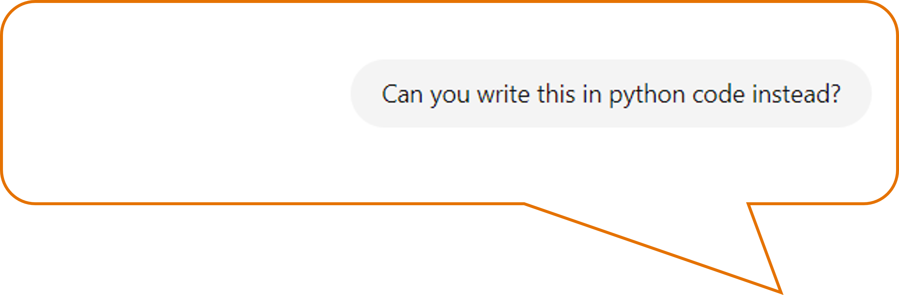ChatGTP 3 Response
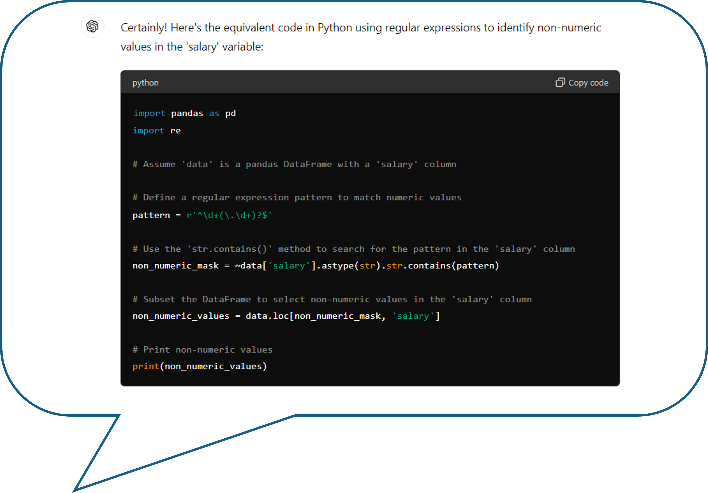Just like that, we have a Python script!
For this tutorial, we started from pre-existing R code. If you were starting from scratch, you could describe your dataset to ChatGPT 3 and have it generate code that you would then copy and run locally. Instead of showing an example of that, in the next tutorial we will discuss ChatGPT 4 which allows you to upload files and run Python code in the browser.
Key takeaways
ChatGPT and other GenAI models can be helpful in your data analysis, but there are certain things you must remember when using it: